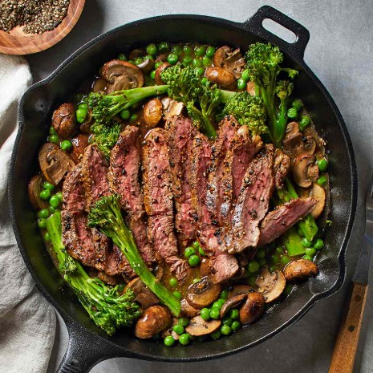
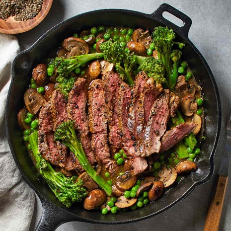

Savory Slims Recipes
Eat smart, keep flavor. Savory Slims turns comfort food into lean, anabolic meals with simple prep, smart swaps, and weekly-friendly meal plans—so you can hit your goals and love every bite.
Basic Meals
Quick, simple recipes that form the foundation of a healthy diet. These meals are easy to prepare and packed with protein to keep you satisfied.


 

Healthy Substitutes
Discover smart ingredient swaps that turn calorie-dense favorites into lighter alternatives without losing flavor. Perfect for keeping comfort food in your routine.


Meal Plans
Structured plans that take the guesswork out of eating healthy. Each plan balances macros and flavor, making it easy to stay consistent week after week.